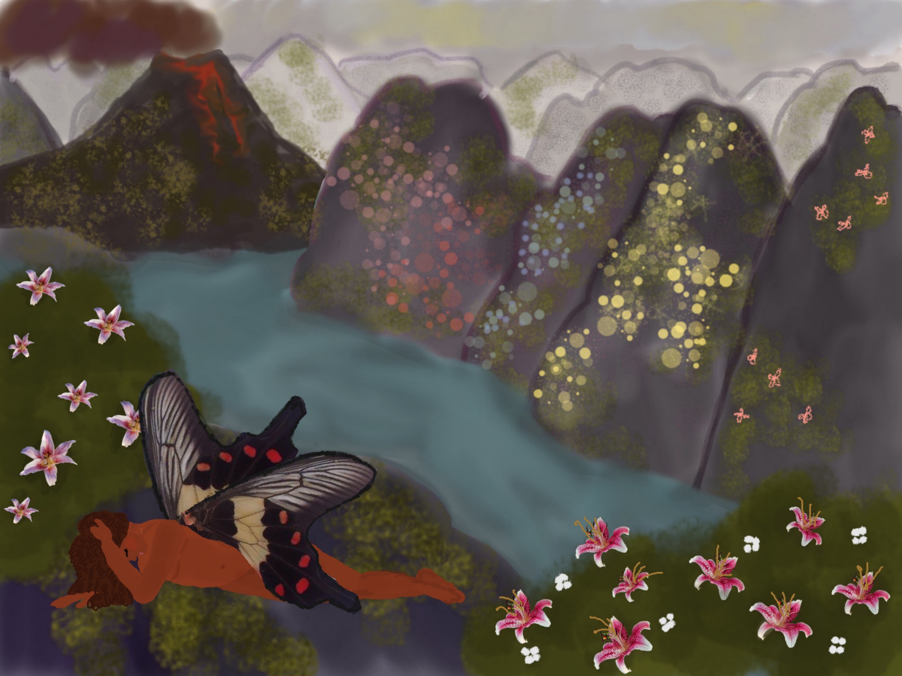
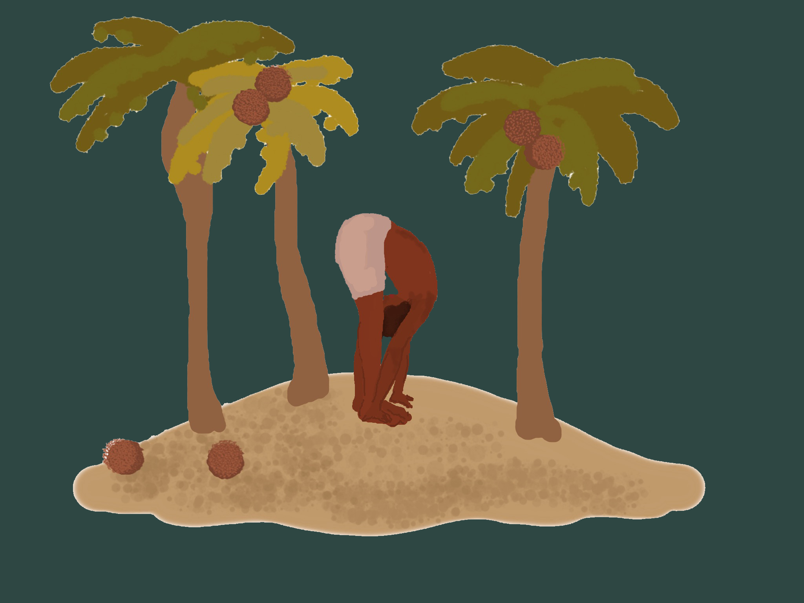
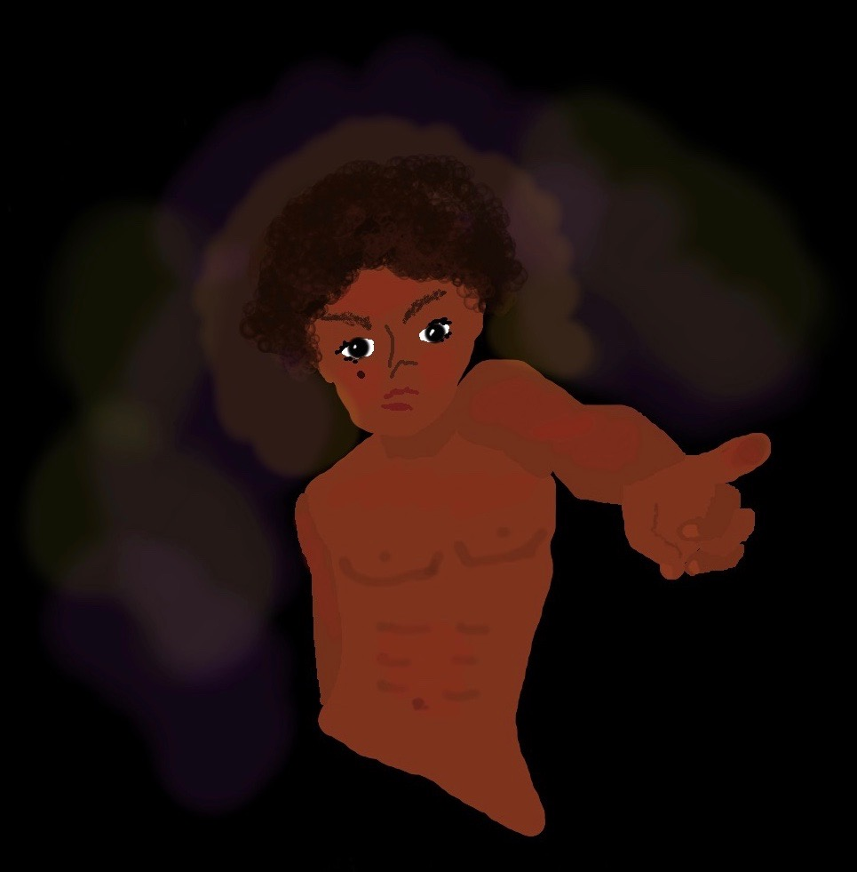
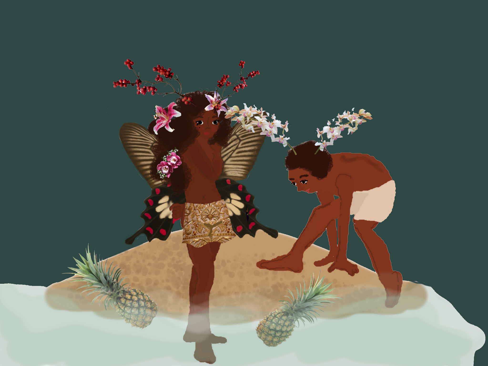
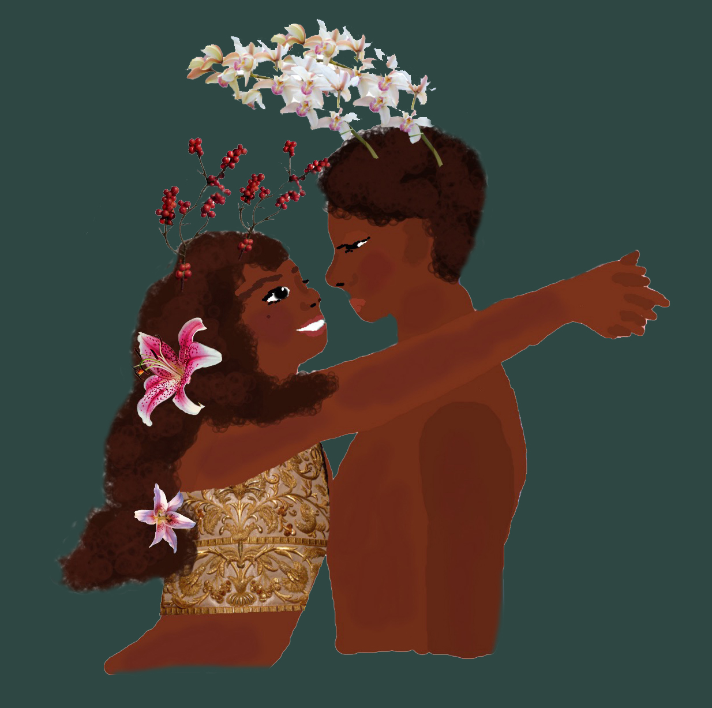
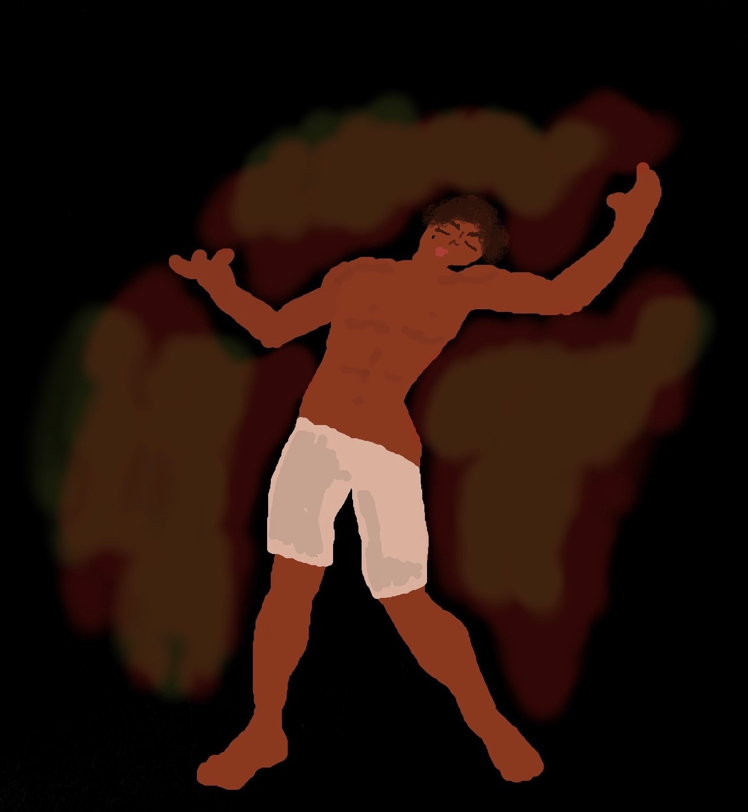
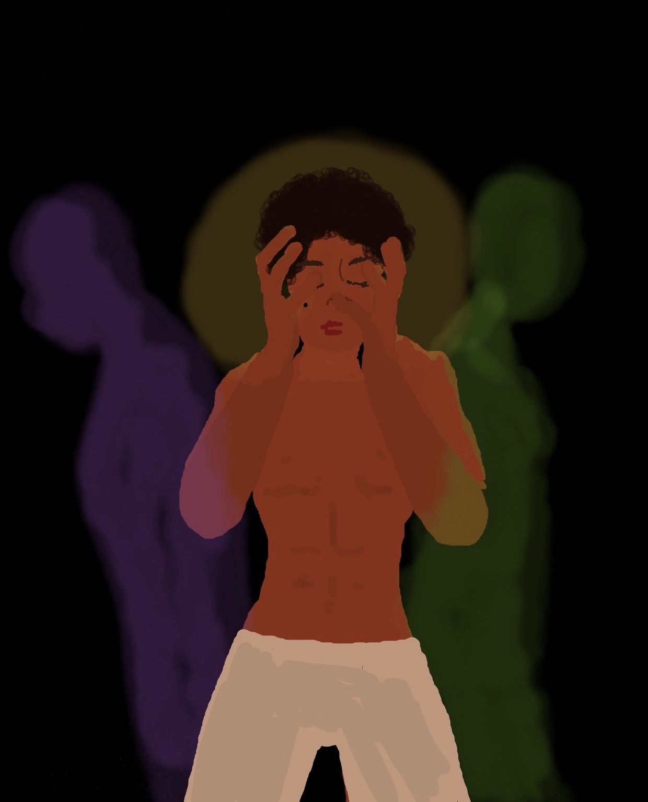
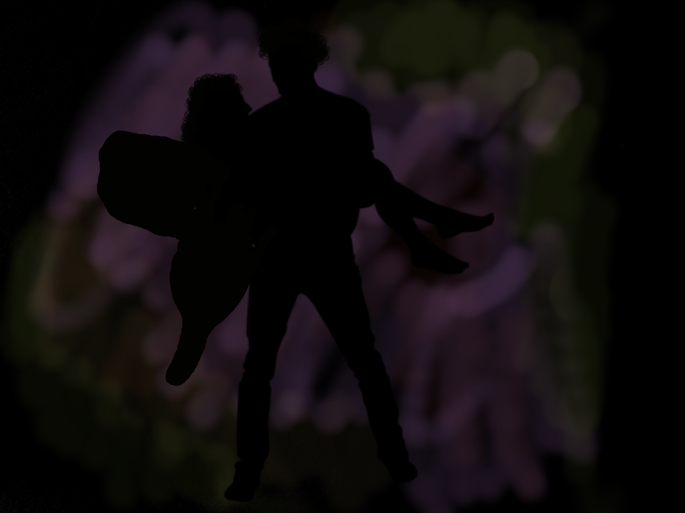
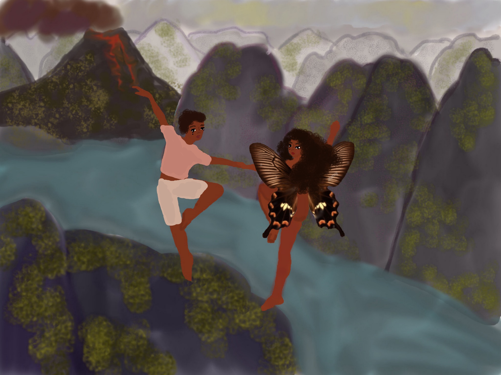
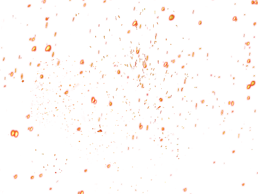

They washed up in a small cave in the rocks, the tide pulling in and out, tucking them in like a blanket. They were splayed among broken glass bottles, iridescent shells, and starfish that scurried around tickling their feet awake. The cave echoed in a dome that caged them in like a hollowed clam, and when they could finally move from their numbness they ran out from beneath it.

The island was guarded by a nexus of flowers and plants in full militia, beneath it all at the center, a massive volcano, brewing waiting to erupt with the bloom. The flora swayed and whispered into the mist, emanating their colors until they soaked into the air in a sweet nectar that the girl breathed in. She was lured in one way or another, by the sadness and happiness within her, like a wishbone being pulled for good luck. She blossomed in the bounty of the earth, her elation overwhelmed with the new discoveries she found in the land, pineapples and pumpkins and squash that grew on vines. She sucked the sap that dripped from the trees, drowning in the stickiness of the pollen that she spread with the swallowtails of her big black wings. She was one with the surface, and from the outside she adorned the land, colored in a euphoria like no other. The boy however, felt the land from within, as he began to feel again, but this time his feelings were of anger. A resentment of himself and what he stood for, a pure loathing of the boy he’d become.


His thoughts repeated to him, over and over and he couldn’t avoid them, whatever he did they stuck out as enormous as the volcano that rumbled in agreement. Meanwhile, Poppy chased around the island, to find where the water began, but she became dizzy in the orbits that she ran. When she moved too fast the elation built inside her, but if she stayed too still the sadness would make her cry in agony and despair. She stopped, breathing heavy, hands on her knees, and she began to laugh in the joy and sadness that sizzled her. She looked inward toward the island, and beneath the tangled vines and rivers and fruit trees she saw a small house fallen and covered in ivy. She felt a comfort in the house, in the possibilities of those who came before and the world they now shared. She looked around for the boy and realized that he didn’t share in her spirit, and she skipped over to him, tapping on his shoulder as he sat, head in his hands against the palm trees. The boy looked up at her from the fume that smoked his mind and he stared at her in mad tears. She smiled, wiping the tears from his cheek, and pointing out to the house in the distance, motioning her hand with the path.


The boy didn’t understand what she wanted, he didn’t care. He didn’t forgive her. But the girl didn’t give up, she knew what she wanted, and she grabbed the boy dragging him by the arm into the tall grass of the innerland, where she stopped and abruptly began to tickle him all over. She tickled him, and tickled, until he laughed, until the volcano settled from its ruckus. She then realized she could distract him from his madness, in the same way she distracted herself from the new sadness, and she ran up into the trees, as the boy declined back to his temper. She climbed up into its branches breaking them off and throwing them down. She wanted to fix up the house, she had an inner desire to connect with the land and those who journeyed there before her. Even though she couldn’t see them, she knew they had felt the feelings she felt now. The boy nodded hesitantly, and they gathered logs together, tying them in unison with grass to make patches for the roof. They gathered everything they could find to recover the small cottage, flowers and vines and leaves, and the boy started to feel better, for a little while. But every now and then the twigs went smashing and their progress broken apart, in a constant tug of war.
With the leftover scavanges, the boy decked her hair with lilies, red berries, hibiscus, and chrysanthemum twirling her beneath his arms and covering her in sand with the tail of a mermaid. The girl then decorated the boy, with a crown of orchids, that stuck out from his head like antlers, and she laughed as he fumbled through the fields, bouncing around like a falling bull. They lay in the grasses together, their house of flowers and hearts of gold, and the girl realized that she liked the boy. She didn’t forgive him, but she liked him. The boy felt the same about the girl, but then his anger overtook him again, and the thoughts came rushing back with a loud bubbling roar. The volcano rumbled with his footsteps as he ran away from her, back through the twisting trees and into the cottage, smashing petals beneath his feet, smushing the fruit and legumes, his toes cutting into the seeds at the center, that fizzled away with a squeal.


All into the night the boy cried in fury, cursed and rambled, smashing anything that lay in his path, throwing things at the walls in destruction. The girl quietly walked up to the cottage, trying hard to settle the pure ecstasy of her mind, standing in the door frame watching him. He could see her silhouette through the darkness that had fallen, and she walked over and kissed him, but he pushed her to the floor. But the girl rose up again, her wings spread like a dark angel. The boy took his anger out, he unleashed it onto her, and she embraced it. The fight of her joy and despair helped keep her sane. This made the boy angrier, she wouldn’t go away, whatever he did, she was right there waiting for him. Late night, they curled beneath the crippling cottage covered in the land that hid them away, almost buried them underground. He yelled, loud and ferociously, and she listened to him, as her heart beat with his rage, it mimicked his words and she could find it in the tone of his voice. Each time he looked at her through the milky darkness that hazed them in the room, the more he enjoyed her company, but the boy was unable to show this. He could see her in her awkwardness, in the purple and orange and green of the air that masked her like a painting. In the way she danced to his despair, in the fear she picked up in those dangling arms, and how she took it and dragged it in her sway. The girl climbed into his lap, draining his madness away and carrying it onto her back.

In early morning, his anger grew up in smoke out of the mouth of the volcano. The magma of the earth he tried to keep dormant inside him, but he couldn’t control it, and it burst from within him, lava spilling out the mouth, leaking and strangling the life below. Killing their voices, burning over the fruitful fields and lucious waters. He looked into her face with worry, he saw how real she’d become. Her wings torn, her presence strong. He could feel the warmth in her skin, the tension in her eyes, her delicacy, a protection against him. Though the boy had begun to fade away some more, and this time it was his hands, taking on an iridescence, that flickered with the winds. He grabbed her by the chin staring into her, and he grabbed her hips pulling her away, and they ran for it. They tore out into the cold darkness that enveloped the island now. The ash in the light of the morning and the sky a deep purple that matched the coloring on the girl’s wings. They ran up and down the black rocks of porous out by the oceanside, climbing each peak and trough, slipping and barely keeping up with the rush in their veins, and the lava that spilled behind them. They ran up to the cliff edge, standing small afront the volcano, as the earth shook beneath their feet, shook with the intensity of the boy. The boy grabbed her hand, and they went plunging down together like dancers twirling in the air, sinking down into the water and swimming out into the shallows.


Next